07/12/2023
i used to think optimists were resigned, stupid, or didn't bother educating themselves on the world, and now i realise that some people can be not emotionally distraught about Everything while still caring a lot
21/11/2023
i think this is the best thing i will ever witness
16/11/2023
some lines from the game 'a short hike'
raccoon: i don't think i'm going to impress anyone with these
bird: HEY!
bird: i'm impressed!
raccoon: i mean, like
raccoon: leave an impression on anyone
raccoon: i have to show people that i'm...
raccoon:...
raccoon: achieving something worthwhile
bird: why don't you take a break?
bird: you've already done so much today
raccoon: i can't
raccoon: i need to show people that i'm worth something
raccoon: i mean
raccoon: my art is worth something
bird: are you ok?
raccoon: yeah
raccoon: i'm good
raccoon: i think i'm just gonna paint the things i want to paint
raccoon: instead of
raccoon: painting the things i think other people want me to paint
raccoon: at the very least
raccoon: it's making things easier
14/11/2023
some things i have recently enjoyed:
1. friends til death: failboat and dougdoug answer questions from viewers while playing games, but if they die in the game, the episode end immediately. the rest of the episode is just "thanks for watching" for ages until it reaches the 20 minute mark for the video.
2. my new big jeans. so big. so roomy. so cool.
3. driving for a very long time
4. dressing up as a dinosaur. RAAAAAAAAAAAR
5. twitch.tv/unclezeming: just some guy who goes around the streets of london cooking with a portable stovetop. will just talk to anyone and give them food too sometimes. lovely idea and very honest reviews of his own cooking. pure soul
24/10/2023
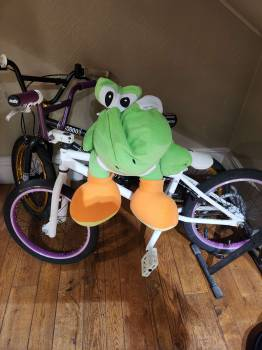
bog: a small, spineless, deflated creature of ambiguous gender and species
14/10/2023
i know i said i would stop my silly suicidalposting but it's just crrrrrrrrrrrrrrrrrraaaaaaaaaaaaaaaaazy how unequipped we are tojust like . exist
12/10/2023
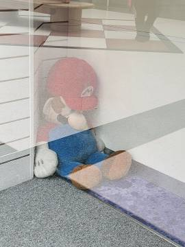
i think if i could clip through a wall into the void just once i would feel true peace but instead i am stuck in this stupid endless stairway of paintings and paintings and paintings and paintings and paintings and paintings and paintings and paintings and
03/05/2023
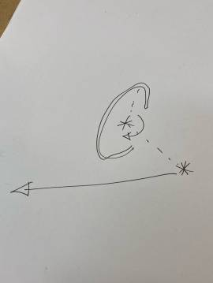
what does it all mean?
22/04/2023
is it possible to miss a space that never really existed? sometimes i think rosalina’s space ship is the closest thing i have to a home
04/04/2023
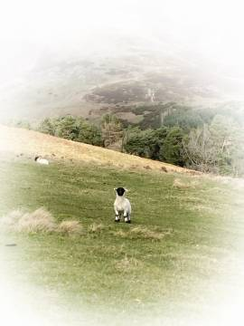
i went to scotland and climbed a hill in platforms and didn’t break my ankles. i think it was very important for me to do that by myself. how was your day, me?
14/03/2023
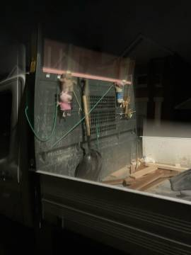
peppa welcomes you
11/03/2023
hatsune miku midwestern screamo
11/03/2023
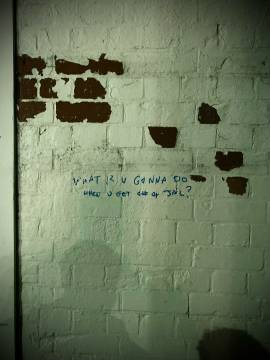
?
07/03/2023
hello my lovely sex bot followers! though it’s true that i’m desperately lonely for the second time ever (!!!) in my life, i don’t think you and your stock image shiny tits are going to help me
05/03/2023
“i’m in the way, i see that. well. no harm done. by which i mean of course: nothing but harm done.”
nw, zadie smith
05/03/2023
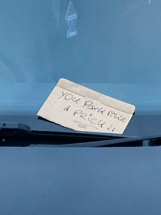
yOu Park like A PRiCK!:
03/03/2023
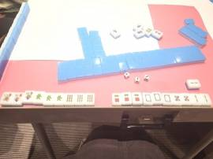
83
03/03/2023
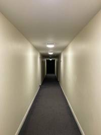
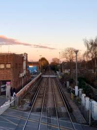
close a door
02/03/2023
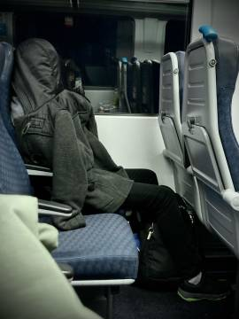
yesterday i took a traffic cone. today i am stuck in traffic (there is a drunk man on the rails. they arrested him and took him away. it took an hour.) (i too have gone off the rails)
29/02/2023
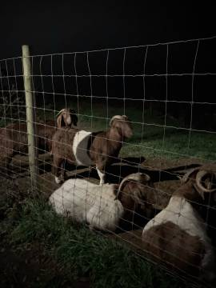
creatures of the night:
- 2 cats
- 4 goats
- a handful of rats
- 1 wanderer with a fistful of uprooted plants, ready to kill
27/02/2023
sometimes i think i act in dangerous ways to distract myself from my very undangerous problems
27/02/2023
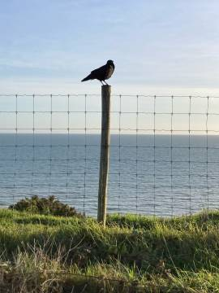
what do you do when the girl you love has your photos on her wall but someone else’s lipstick on her cheek? what do you do?
21/02/2023
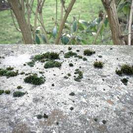
imsoaloneimsoaloneimsoalone
21/02/2023
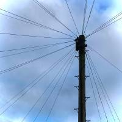
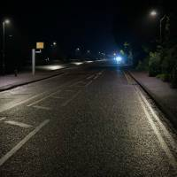
right now i am listening to catchyalater by frog instead of sleeping. i don’t know what i’m doing here. i deleted all my social media because it put so many worms in my brain. why am i back here? i think maybe i like the idea of having somewhere where no one knows me. no one has to listen. i actually think it’s kind of important that i get used to the idea that no one is listening. sometimes it’s hard to think things and just smile back at myself in my brain. people don’t expect this from me because i’m quiet. i don’t even expect it from me. hm. much 2 think about
16/02/2023
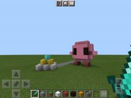
my old pocket edition world.fire
11/02/2023
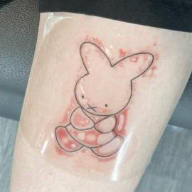
she bleedinged *sad face with x mouth*